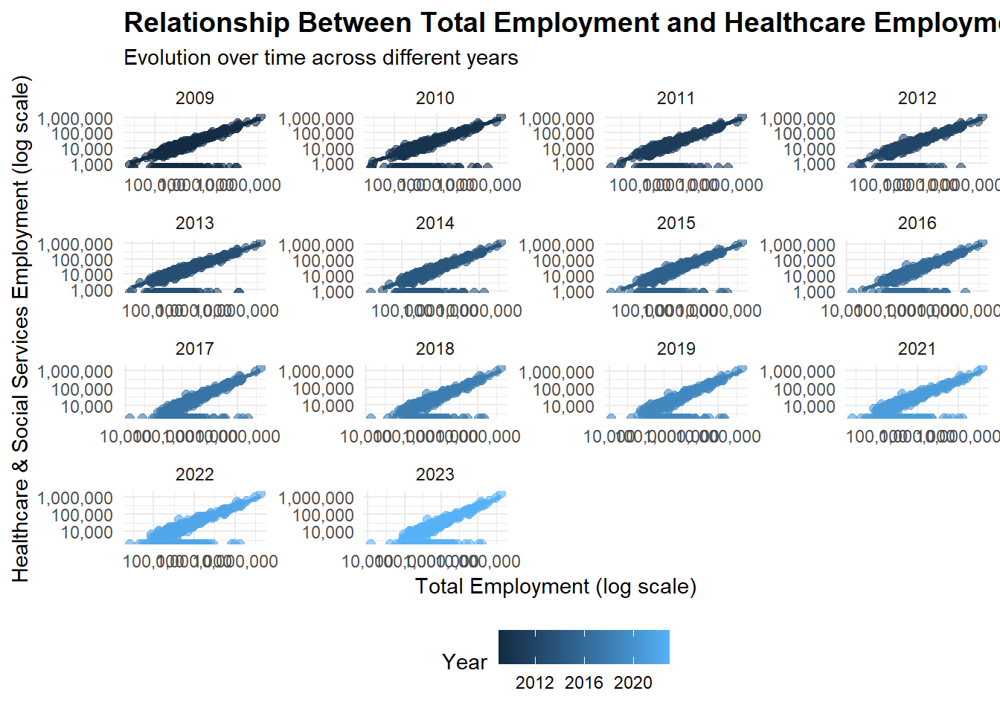
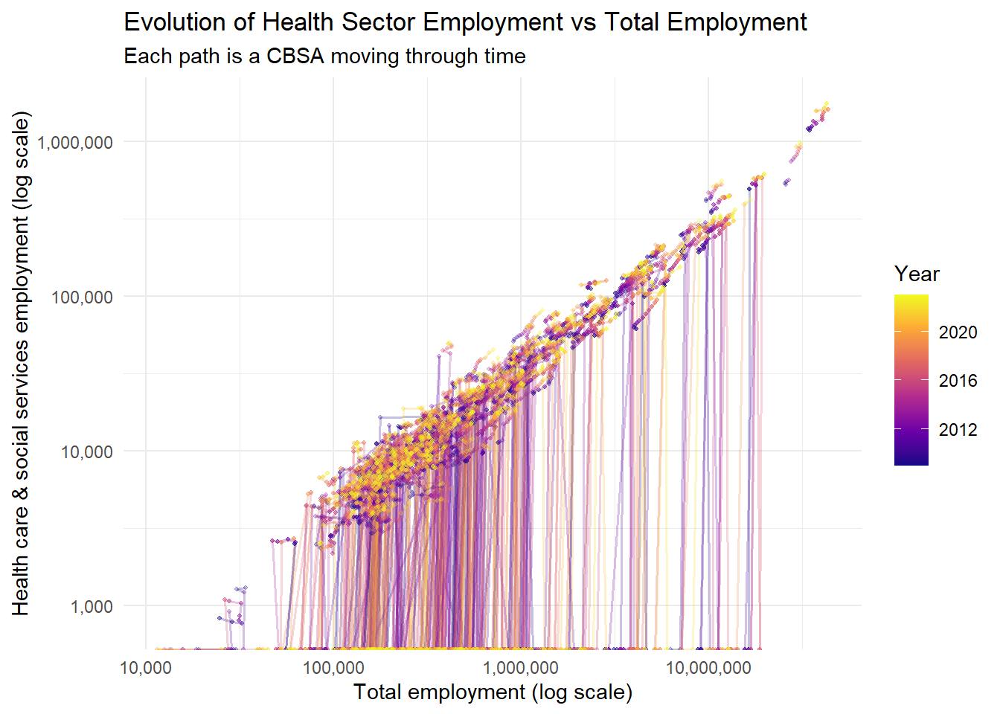

2.1 Extra Credit Opportunity #01: Relationship Diagram
The diagram below summarizes the structure of the datasets used in this project and the relationships among them.
Each dataset in this project represents a distinct source of information related to housing affordability, and the diagram above shows the logical connections among them.
ACS Tables — INCOME, RENT, POPULATION, and HOUSEHOLDS:
These datasets share the geographic identifier GEOID and the variable year.
These common keys allow one-to-one joins, aligning indicators such as median household income, monthly rent, population size, and number of households for each metropolitan area and each year.
PERMITS (Building Permits Survey):
Uses the CBSA code to identify the same metropolitan areas.
While CBSA and GEOID are not identical, they represent equivalent regional boundaries and can be cross-referenced to connect new housing construction data with ACS demographic measures.
WAGES (Bureau of Labor Statistics):
Uses the FIPS code to identify regions and includes variables for total employment, total wages, and average annual wage by industry (INDUSTRY).
Each INDUSTRY code link has a detailed description in the INDUSTRY_CODES table.
INDUSTRY_CODES (Lookup Table):
Provides hierarchical industry classification labels that map the numeric codes in the WAGES dataset to descriptive names.
Put together, all these relationships show how multiple data sources with different identifiers (GEOID, CBSA, FIPS) and time references (year) can be integrated.
Although the data are not fully normalized—some relationships, we have enough to study how income, rent, housing supply, and wage dynamics interact across U.S. metropolitan areas over time.
2.2 Multi-Table Questions
1.Which CBSA (by name) permitted the largest number of new housing units in the decade from 2010 to 2019 (inclusive)?
The CBSA that permitted the largest number of new housing units in the decade from 2010 to 2019 (inclusive) is Houston-Sugar Land-Baytown, TX Metro Area, which permitted 482075 new housing units.
2.In what year did Albuquerque, NM (CBSA Number 10740) permit the most new housing units?
Abuquerque, NM (CBSA Number 10740) issued the most new housing units in the year of 2021, for a total of 4021.
3.Which state (not CBSA) had the highest average individual income in 2015? To answer this question, you will need to first compute the total income per CBSA by multiplying the average household income by the number of households, and then sum total income and total population across all CBSAs in a state. With these numbers, you can answer this question.
# A tibble: 1 × 2
state avg_individual_income
<chr> <dbl>
1 DC 93294
4.Data scientists and business analysts are recorded under NAICS code 5182. What is the last year in which the NYC CBSA had the most data scientists in the country? In recent, the San Francisco CBSA has had the most data scientists.
Show code
library(dplyr)# Filter WAGES data for data scientists (NAICS 5182) firstwages_filtered <- WAGES |>filter(INDUSTRY ==5182) |>mutate(std_cbsa =paste0(FIPS, "0"))# Filter POPULATION data and prepare for joinpopulation_filtered <- POPULATION |>mutate(std_cbsa =paste0("C", GEOID))# Join the datasets on std_cbsa and yeardata_scientists <- wages_filtered |>inner_join( population_filtered |>select(std_cbsa, NAME, year),by =c("std_cbsa"="std_cbsa", "YEAR"="year") )# Group by year and CBSA to find which had the most data scientistsds_by_year <- data_scientists |>group_by(YEAR, NAME) |>summarise(total_employment =sum(EMPLOYMENT, na.rm =TRUE), .groups ="drop") |>group_by(YEAR) |>slice_max(total_employment, n =1) |>ungroup() |>arrange(desc(YEAR))# Find the last year NYC had the most data scientistslast_nyc_year <- ds_by_year |>filter(grepl("New York", NAME, ignore.case =TRUE)) |>pull(YEAR) |>max()# Filter to show only NYC area rowsnyc_only <- ds_by_year |>filter(grepl("New York", NAME, ignore.case =TRUE))print(nyc_only)
# A tibble: 5 × 3
YEAR NAME total_employment
<dbl> <chr> <dbl>
1 2015 New York-Newark-Jersey City, NY-NJ-PA Metro Area 18922
2 2014 New York-Newark-Jersey City, NY-NJ-PA Metro Area 17828
3 2013 New York-Newark-Jersey City, NY-NJ-PA Metro Area 14251
4 2012 New York-Northern New Jersey-Long Island, NY-NJ-PA Met… 14423
5 2009 New York-Northern New Jersey-Long Island, NY-NJ-PA Met… 16349
The last year in which the NYC CBSA had the most data scientists in the country was 2015.
5. What fraction of total wages in the NYC CBSA was earned by people employed in the finance and insurance industries (NAICS code 52)? In what year did this fraction peak?
Show code
# Step 1: Filter WAGES data before joiningwages_filtered <- WAGES |>mutate(std_cbsa =paste0(FIPS, "0"))# Step 2: Filter POPULATION data and prepare for joinpopulation_filtered <- POPULATION |>mutate(std_cbsa =paste0("C", GEOID)) |>filter(grepl("New York", NAME, ignore.case =TRUE))# Step 3: Join to get NYC data onlynyc_wages <- wages_filtered |>inner_join( population_filtered |>select(std_cbsa, NAME, year),by =c("std_cbsa"="std_cbsa", "YEAR"="year") )# Step 4: Calculate total wages by year for NYCtotal_wages_by_year <- nyc_wages |>group_by(YEAR) |>summarise(total_wages =sum(TOTAL_WAGES, na.rm =TRUE), .groups ="drop")# Step 5: Calculate finance and insurance (NAICS 52) wages by year for NYCfinance_wages_by_year <- nyc_wages |>filter(INDUSTRY ==52) |>group_by(YEAR) |>summarise(finance_wages =sum(TOTAL_WAGES, na.rm =TRUE), .groups ="drop")# Step 6: Join and calculate the fractionfinance_fraction <- total_wages_by_year |>inner_join(finance_wages_by_year, by ="YEAR") |>mutate(fraction = finance_wages / total_wages) |>arrange(YEAR)# Find the year with the peak fractionpeak_year <- finance_fraction |>slice_max(fraction, n =1)
The fraction of total wages in the NYC CBSA earned by people employed in the finance and insurance industries The fraction of total wages in the NYC CBSA earned by people employed in the finance and insurance industries peaked in the year 2014, with a fraction of 4.6%.
2.3 Initial Visualizations
1. The relationship between monthly rent and average household income per CBSA in 2009 using ggplot
Show code
library(ggplot2)income_rent_2009 <- INCOME %>%filter(year ==2009) %>%inner_join(RENT %>%filter(year ==2009), by =c("GEOID", "year"))ggplot(income_rent_2009, aes(x = household_income, y = monthly_rent)) +geom_point(color ="blue", alpha =0.6) +labs(title ="Monthly Rent vs. Average Household Income (2009)",x ="Average Household Income",y ="Monthly Rent") +theme_bw()
2. The relationship between total employment and total employment in the health care and social services sector (NAICS 62) across different CBSAs. Design your visualization so that it is possible to see the evolution of this relationship over time.
Show code
library(dplyr)library(ggplot2)# Step 1: Filter WAGES data for healthcare (NAICS 62) before joininghealthcare_wages <- WAGES |>filter(INDUSTRY ==62) |>mutate(std_cbsa =paste0(FIPS, "0")) |>group_by(std_cbsa, YEAR) |>summarise(healthcare_employment =sum(EMPLOYMENT, na.rm =TRUE), .groups ="drop")# Step 2: Calculate total employment by CBSA and yeartotal_employment <- WAGES |>mutate(std_cbsa =paste0(FIPS, "0")) |>group_by(std_cbsa, YEAR) |>summarise(total_employment =sum(EMPLOYMENT, na.rm =TRUE), .groups ="drop")# Step 3: Join healthcare and total employment dataemployment_data <- total_employment |>inner_join(healthcare_wages, by =c("std_cbsa", "YEAR")) |>inner_join( POPULATION |>mutate(std_cbsa =paste0("C", GEOID)) |>select(std_cbsa, NAME, year),by =c("std_cbsa"="std_cbsa", "YEAR"="year") ) |>mutate(healthcare_share = healthcare_employment / total_employment)ggplot(employment_data, aes(x = total_employment, y = healthcare_employment, color = YEAR)) +geom_point(alpha =0.6, size =2) +geom_smooth(method ="lm", se =FALSE, alpha =0.3) +facet_wrap(~YEAR, scales ="free") +scale_x_log10(labels = scales::comma) +scale_y_log10(labels = scales::comma) +labs(title ="Relationship Between Total Employment and Healthcare Employment by CBSA",subtitle ="Evolution over time across different years",x ="Total Employment (log scale)",y ="Healthcare & Social Services Employment (log scale)",color ="Year" ) +theme_minimal() +theme(plot.title =element_text(size =14, face ="bold"),legend.position ="bottom" )
Warning: Removed 1141 rows containing non-finite outside the scale range
(`stat_smooth()`).

3. The evolution of average household size over time. Use different lines to represent different CBSAs. For each plot, make sure your final visualization is publication-ready and equipped with, at a minimum.
Proper x and y-axis axis labels
A meaningful title
Proper units for axis ticks (if appropriate)
Proper legend titles (if appropriate)
Proper font sizes so that all text is legible.
Show code
library(dplyr)library(ggplot2)library(scales)
Warning: package 'scales' was built under R version 4.5.1
Attaching package: 'scales'
The following object is masked from 'package:purrr':
discard
The following object is masked from 'package:readr':
col_factor
Show code
# --- Build CBSA–year totals from WAGES ---health_emp <- WAGES %>%group_by(YEAR, FIPS) %>%summarise(total_emp =sum(EMPLOYMENT, na.rm =TRUE),health_emp =sum(EMPLOYMENT[INDUSTRY ==62], na.rm =TRUE),.groups ="drop" ) %>%filter(total_emp >0) %>%# keep valid rowsmutate(std_cbsa =paste0(FIPS, "0")) # to match Census IDs# (optional) add CBSA names for nicer plots/tooltips/filterscbsa_names <- POPULATION %>%mutate(std_cbsa =paste0("C", GEOID)) %>%distinct(std_cbsa, NAME)health_emp <- health_emp %>%left_join(cbsa_names, by ="std_cbsa")
Warning in left_join(., cbsa_names, by = "std_cbsa"): Detected an unexpected many-to-many relationship between `x` and `y`.
ℹ Row 2 of `x` matches multiple rows in `y`.
ℹ Row 2 of `y` matches multiple rows in `x`.
ℹ If a many-to-many relationship is expected, set `relationship =
"many-to-many"` to silence this warning.
Show code
ggplot(health_emp, aes(x = total_emp, y = health_emp)) +geom_point(alpha =0.55) +scale_x_log10(labels = comma) +scale_y_log10(labels = comma) +facet_wrap(~ YEAR, ncol =4) +labs(title ="Health Care & Social Services vs Total Employment across CBSAs",subtitle ="Each panel is a year; log scales show the relationship across city sizes",x ="Total employment (log scale)",y ="Health care & social services employment (log scale)" ) +theme_minimal()
Warning in scale_y_log10(labels = comma): log-10 transformation introduced
infinite values.
Show code
ggplot(health_emp, aes(total_emp, health_emp, group = std_cbsa)) +geom_path(aes(color = YEAR), alpha =0.25, linewidth =0.6) +geom_point(aes(color = YEAR), alpha =0.25, size =0.7) +scale_x_log10(labels = comma) +scale_y_log10(labels = comma) +scale_color_viridis_c(option ="plasma", guide =guide_colorbar(title ="Year")) +labs(title ="Evolution of Health Sector Employment vs Total Employment",subtitle ="Each path is a CBSA moving through time",x ="Total employment (log scale)",y ="Health care & social services employment (log scale)" ) +theme_minimal()
Warning in scale_y_log10(labels = comma): log-10 transformation introduced
infinite values.
Warning in scale_y_log10(labels = comma): log-10 transformation introduced
infinite values.

3 Building Indices of Housing Affordability and Housing Stock Growth
We will begin by constructing an initial metric of rent affordability by combining our INCOME, RENT, and POPULATION tables from above. Using a suitable join, we merge these three into a single table which can be used to perform the following task.
3.1 Rent Burden
Standardization: Define a baseline value around which your metric is centered.
Some possible baseline structures may include:
Setting 0, 50, or 100 to the long-term national average
Setting 0, 50, or 100 to the national average in the first year of your study
Setting 0 to the lowest value and 100 to the highest value in the study
Show code
# Load required librarieslibrary(dplyr)# Step 1: Join INCOME and RENT tablesrent_burden_raw <- INCOME |>inner_join( RENT,by =c("GEOID"="GEOID", "year"="year"),suffix =c("_income", "_rent") ) |>select(GEOID, NAME_income, year, household_income, monthly_rent) |>rename(NAME = NAME_income)# Step 2: Calculate basic rent-to-income ratio# Annualize monthly rent and compute ratiorent_burden_raw <- rent_burden_raw |>mutate(annual_rent = monthly_rent *12,raw_rent_to_income = annual_rent / household_income )# Step 3: Calculate national baseline (long-term average across all years and CBSAs)national_baseline <- rent_burden_raw |>summarise(mean_rent_to_income =mean(raw_rent_to_income, na.rm =TRUE)) |>pull(mean_rent_to_income)cat("National baseline rent-to-income ratio:", round(national_baseline, 4), "\n\n")
# A tibble: 10 × 6
NAME year household_income monthly_rent rent_burden_index burden_level
<chr> <dbl> <dbl> <dbl> <dbl> <chr>
1 Clearlake… 2023 59444 1544 79.3 Very High
2 Aguadilla… 2023 21290 548 78.5 Very High
3 Cape Cora… 2023 71547 1797 76.6 Very High
4 Miami-For… 2023 76271 1914 76.6 Very High
5 Port St. … 2023 68316 1679 75.0 Very High
6 Ponce, PR… 2023 20978 502 73.0 Very High
7 Tampa-St.… 2023 72743 1729 72.5 Very High
8 Key West-… 2023 88870 2091 71.8 Very High
9 North Por… 2023 78914 1854 71.7 Very High
10 Ocala, FL… 2023 58606 1365 71.1 Very High